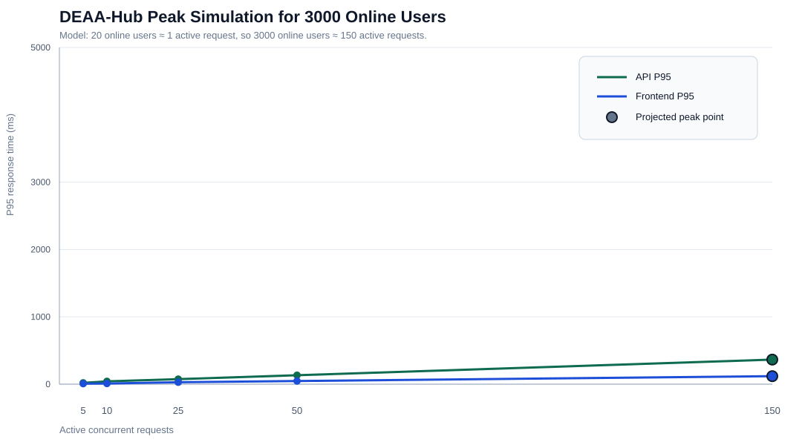

Utilisateurs connectés
Personnes connectées ou en train d'utiliser la plateforme pendant la même période. Tous les utilisateurs connectés ne cliquent pas exactement au même instant.
Ce rapport est conçu pour une présentation non technique. Il explique la signification des chiffres du test de charge et la méthode utilisée pour estimer le comportement avec 3000 utilisateurs.
Le graphique montre le temps de réponse P95. Plus la valeur est basse, meilleur est le résultat. Les premiers points viennent du vrai test de charge, et le dernier point représente la projection pour 3000 utilisateurs.

Personnes connectées ou en train d'utiliser la plateforme pendant la même période. Tous les utilisateurs connectés ne cliquent pas exactement au même instant.
Nombre de requêtes qui arrivent au serveur en même temps. Ce rapport utilise le modèle suivant : 1 requête active pour 20 utilisateurs connectés. Donc 3000 utilisateurs connectés deviennent environ 150 requêtes actives.
Le temps de réponse médian. La moitié des requêtes sont plus rapides que cette valeur, et l'autre moitié est plus lente.
Un indicateur important de l'expérience utilisateur. 95% des requêtes sont plus rapides que cette valeur. Il est souvent plus utile que la moyenne, car il montre ce que ressentent les utilisateurs les plus lents.
Requêtes par seconde. Cela indique le volume de trafic que le système a traité pendant le test.
Pourcentage des requêtes échouées. 0% signifie que toutes les requêtes testées ont réussi.
| Zone | Ce que cela mesure | P50 projeté | P95 projeté | RPS projeté | État |
|---|---|---|---|---|---|
| API | Réponses du backend et de la base de données : étudiants, enseignants, notes, tableau de bord, statistiques. | 279 ms | 365 ms | 646.81 | BON |
| Frontend | Réponses des pages servies par l'application web. | 90 ms | 119 ms | 1842.61 | BON |
Ces données sont les résultats réels utilisés pour créer la projection. Le test a augmenté progressivement le nombre de travailleurs actifs et a vérifié à la fois les endpoints API backend et les pages frontend.
| Travailleurs actifs | Requêtes API | API P95 | API RPS | Erreurs API | Requêtes frontend | Frontend P95 | Frontend RPS | Erreurs frontend |
|---|---|---|---|---|---|---|---|---|
| 5 | 4592 | 20 ms | 382.27 | 0% | 13411 | 8 ms | 1117.29 | 0% |
| 10 | 4572 | 42 ms | 380.3 | 0% | 17659 | 10 ms | 1471.29 | 0% |
| 25 | 5560 | 75 ms | 461.56 | 0% | 17559 | 29 ms | 1461.56 | 0% |
| 50 | 6019 | 133 ms | 498.61 | 0% | 18508 | 47 ms | 1537.77 | 0% |
| État | Signification |
|---|---|
| BON | Le P95 est inférieur ou égal à 1 seconde. Le système devrait être ressenti comme rapide. |
| A SURVEILLER | Le P95 est entre 1 et 2,5 secondes. C'est acceptable, mais à surveiller. |
| RISQUE | Le P95 est entre 2,5 et 5 secondes. Les utilisateurs peuvent remarquer une lenteur. |
| CRITIQUE | Le P95 est supérieur à 5 secondes. Il y a un risque de timeout et de frustration utilisateur. |
Ceci est une simulation de planification, et non un test destructif avec 3000 vrais navigateurs ouverts en même temps. Cette méthode est plus sûre et plus facile à expliquer, car elle utilise des mesures réelles sur des charges plus petites, puis projette le pic attendu. Pour un test officiel en production, il faut prévoir une fenêtre de maintenance, surveiller le CPU, la mémoire, les connexions à la base de données, et confirmer les limites d'hébergement avant d'augmenter le trafic.